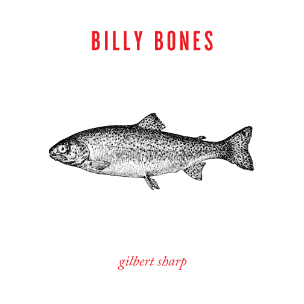

Welcome to Brackets, a modern open-source code editor that understands web design. It's a lightweight, yet powerful, code editor that blends visual tools into the editor so you get the right amount of help when you want it.
Brackets is a different type of editor. Brackets has some unique features like Quick Edit, Live Preview and others that you may not find in other editors. And Brackets is written in JavaScript, HTML and CSS. That means that most of you using Brackets have the skills necessary to modify and extend the editor. In fact, we use Brackets every day to build Brackets. To learn more about how to use the key features, read on.
In order to edit your own code using Brackets, you can just open the folder containing your files. Brackets treats the currently open folder as a "project"; features like Code Hints, Live Preview and Quick Edit only use files within the currently open folder.
Once you're ready to get out of this sample project and edit your own code, you can use the dropdown in the left sidebar to switch folders. Right now, the dropdown says "Getting Started" - that's the folder containing the file you're looking at right now. Click on the dropdown and choose "Open Folder…" to open your own folder. You can also use the dropdown later to switch back to folders you've opened previously, including this sample project.No more switching between documents and losing your context. When editing HTML, use the Cmd/Ctrl + E shortcut to open a quick inline editor that displays all the related CSS. Make a tweak to your CSS, hit ESC and you're back to editing HTML, or just leave the CSS rules open and they'll become part of your HTML editor. If you hit ESC outside of a quick inline editor, they'll all collapse. Quick Edit will also find rules defined in LESS and SCSS files, including nested rules.
Want to see it in action? Place your cursor on the tag above and press Cmd/Ctrl + E. You should see a CSS quick editor appear above, showing the CSS rule that applies to it. Quick Edit works in class and id attributes as well. You can use it with your LESS and SCSS files also. You can create new rules the same way. Click in one of the tags above and press Cmd/Ctrl + E. There are no rules for it right now, but you can click the New Rule button to add a new rule for . 